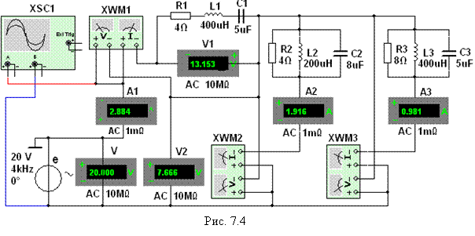
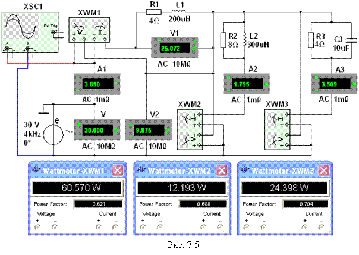
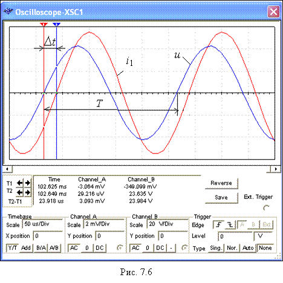

Задание 2. Запустить
лабораторный комплекс Labworks и среду
МS10 (щёлкнув мышью на команде Эксперимент меню комплекса Labworks). Открыть файл 7.4.ms10, размещённый в папке Circuit Design Suitе 10.0 с записанной схемой разветвленной цепи синусоидального тока
(рис. 7.4), оставив в двухполюсниках указанные в табл. 7.1 элементы, или,
согласно варианту задания (см. табл. 7.1), собрать схему цепи на рабочем
поле среды МS10, установить параметры
элементов двухполюсников S1, P2, P3, источника синусоидального напряжения сопротивления RА = 1 мОм амперметров А1, А2 и А3 и RV = 10 МОм вольтметров V, V1 и V2, режим работы АС измерительных приборов.
Скопировать схему цепи на страницу отчёта.
Изменяя масштаб горизонтальной
развертки лучей 0,05…0,1 мс/дел при частотах ЭДС f = 3…5 кГц, получить удобные для наблюдения и измерения
фазового угла осциллограммы напряжения и тока (2…3 периода изменения ЭДС е) на экране осциллографа.

Напряжение uR = RАi, пропорциональное току i, снимается с внутреннего активного
сопротивления RА = 1 мОм амперметра А1, поэтому масштаб по вертикали
канала A осциллографа задавать в интервале
0,1…0,5 мВ/дел (mV/div), а канала B, на вход которого подаётся напряжение
источника е, в интервале 5…20 В/дел (V/div).
Т а б л и ц а 7.2
|
|
f, Гц |
E, В |
j, град |
U1, В |
I1, A |
j1, град |
U2, В |
I2, A |
j2, град |
U3, В |
I3, A |
j3, град |
||||
|
Рассчитано |
f |
|
|
|
|
|
|
|
|
|
|
|
||||
|
Измерено |
f |
|
|
|
|
|
|
|
|
|
|
|
||||
|
|
|
|
|
|
|
|
|
|
|
|
|
|||||
|
Рассчитано по данным экспериментов |
Полные сопротивления двухполюсников |
|||||||||||||||
|
|
Z1 = U1/I1, Ом |
Z2 = U2/I2, Ом |
Z3 = U3/I3, Ом |
|
||||||||||||
|
f |
|
|
|
|
||||||||||||
|
|
|
|
|
|
||||||||||||
Запустить программу
моделирования. Показания приборов и значения вычисленных фазовых углов , где k – номер
ветви, и угла на входе цепи, занести в табл. 7.2. При этом углы сдвига фаз j1, j2 и j3 ветвей найти, воспользовавшись
показаниями ваттметров, т. е. ÷jk÷ = аrccos(Pk/UkIk), где Pk – показание k-го ваттметра; Uk – напряжение k-й ветви;
Ik – ток k-ой ветви; k = 1,2 и 3. Угол сдвига
фаз на входе цепи определить по формуле: j = 360Dt/T, град, где Dt – временной интервал
между напряжением и током в секундах, определяемый по осциллограммам
напряжения u и тока i1; T = 1/f – период изменения питающего
цепь напряжения в секундах; f
– частота ЭДС источника е в герцах.
Сравнить результаты измерений
электрических величин со значениями, полученными в результате расчёта. В
случае расхождения значений варианту) параметры
элементов цепи (см. табл. 7.1).
В качестве примера на рис. 7.5 приведены
показания ваттметров, а на рис. 7.6 – осциллограммы напряжения u и тока i1 на входе цепи с параметрами
элементов для варианта 30 (см. табл. 7.1): Е
= 30 В, f = 4 кГц, R1 = 4 Ом, L1 = 0,2 мГн, R2 = 8 Ом, L2 = 0,3 мГн, R3 = 4 Ом, С3 = 10 мкФ.

Углы
сдвига фаз ветвей и на входе цепи:
j1 = аrccos(0,621) = 51,6°; j2 = аrccos(0,688) = 46,53°;
j3 = - аrccos(0,704) = - 45,25°; j = 360×23,92/250 = 34,44°.
Комплексы сопротивлений
ветвей:
Ом;
Ом;
Ом.
Полное комплексное сопротивление на входе
цепи
Ом.
. Мощность на входе цепи
Р = UI1cosj = Р1 + Р2
+ Р3
= 30×3,89cos34,44° = 60,57 + 12,19 + 24,4
=
= 96,24 Вт » 97,16 Вт.
